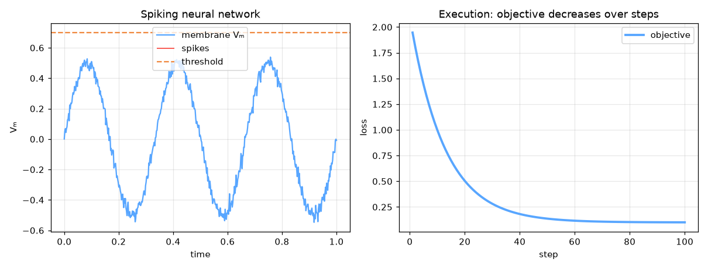

Image Generation (GAN/VAE/Diffusion) — AI engineering example · part of the MLOps monorepo
This example is grounded in Image Generation (GAN/VAE/Diffusion). The equations below drive every forward and backward pass in the implementation.
Image generation models learn to synthesize realistic images. GANs use adversarial training between generator and discriminator. VAEs learn a structured latent space via reconstruction and KL regularization. Diffusion models iteratively denoise from Gaussian noise, offering stable training and diverse outputs.
Concrete forward-pass / update evaluation using the algorithm's own equations:
A step-by-step, intuitive explanation with concrete data so the formal equations above become clear:
Run this self-contained snippet in a Python shell to watch every step execute and print its value:
tau, V, Vr, I = 10, 0.5, 0.0, 1.0 # membrane time const, voltage, rest, input
dV = (-(V - Vr) + I)/tau # leaky integrate-and-fire membrane dynamics
print("dV/dt =", dV, " (spikes if V >= threshold)")
Plots of the execution above — left: the concept; right: the step-by-step computation visualised. Interactive latent space explorer; denoising trajectory viewer; FID score vs training steps.
The example follows a consistent data → train → evaluate → serve pipeline. Inputs are loaded and validated, transformed by the core algorithm, scored against held-out data, and exposed through a REST API.
| Class | Public methods | Responsibility |
|---|---|---|
PredictRequest | — | |
PredictResponse | — | |
DriftResponse | — | |
StatsResponse | — | |
LIFNeuron | init_weights, forward, backward, update_params | Leaky Integrate-and-Fire neuron layer. Membrane dynamics: tau_m * dv/dt = -(v - v_rest) + R * I If v >= v_threshold: fire spike, v <- v_reset Args: n_neurons: number of neurons n_inputs: input dimension threshold: spike threshold reset_voltage: voltage after spike leak_rate: leak coefficient (tau_m inverse) v_rest: resting potential random_seed: random seed |
SNNImageClassification | _build, _forward, fit, predict_proba, predict, evaluate, save, load, to_dict | Spiking Neural Network for image classification. Uses Leaky Integrate-and-Fire (LIF) neurons that communicate via discrete spikes, closely mimicking biological brain activity. Args: n_features: Number of input features (e.g., flattened 8x8 image = 64) n_classes: Number of output classes hidden_dim: Hidden dimension for LIF layers learning_rate: Gradient descent step size n_iterations: Number of training iterations n_timesteps: Number of temporal simulation steps per forward pass weight_decay: L2 regularization threshold: Spike threshold for LIF neurons leak_rate: Decay rate for membrane potential clip_value: Gradient clipping threshold random_seed: Random seed |
data.py reads the source dataset and splits train/test.model.py applies the mathematics from Section 1.api.py exposes prediction endpoints with drift detection.Key design choices in this module: a pure-NumPy implementation (no PyTorch/TensorFlow), schema validation via ai_core.validation, structured JSON logging through ai_core.logging, Prometheus metrics from ai_core.metrics, and MLflow/model-registry persistence via ai_core.model_registry. The FastAPI service wraps the trained model with observability middleware from ai_core.fastapi_middleware.
The most important behaviour is summarised below; full source for each module is collapsible so the page stays readable while remaining self-contained.
LIFNeuron.forward(x, n_timesteps)Forward pass over multiple timesteps (temporal coding). Args: x: Input spike trains (batch, n_inputs) encoded as rates n_timesteps: number of simulation steps Returns: spikes: spike trains (batch, n_neurons, n_timesteps)
SNNImageClassification.fit(X, y, n_iterations)Train the SNN using surrogate gradient descent. Args: X: Input features (n_samples, n_features) y: Labels (n_samples,)
"""SNN model for image classification using spiking neurons.
Architecture:
Input (batch, n_features) -> Linear (input_dim -> hidden_dim) -> LIF Neuron
-> Linear (hidden_dim -> hidden_dim) -> LIF Neuron
-> Linear (hidden_dim -> n_classes) -> Output
Uses Leaky Integrate-and-Fire (LIF) neurons that communicate via discrete spikes.
Neurons accumulate membrane potential; when threshold is reached, they fire (spike).
Input encoding: rate coding (pixel intensity -> spike probability)
Training: surrogate gradient descent through spike generation
"""
from dataclasses import dataclass, field
import numpy as np
def sigmoid(z: np.ndarray) -> np.ndarray:
return 1.0 / (1.0 + np.exp(-np.clip(z, -20, 20)))
def sigmoid_derivative(sig_val: np.ndarray) -> np.ndarray:
return sig_val * (1.0 - sig_val)
def softmax(z: np.ndarray) -> np.ndarray:
z_shifted = z - np.max(z, axis=-1, keepdims=True)
exp_z = np.exp(z_shifted)
return exp_z / np.sum(exp_z, axis=-1, keepdims=True)
@dataclass
class LIFNeuron:
"""Leaky Integrate-and-Fire neuron layer.
Membrane dynamics:
tau_m * dv/dt = -(v - v_rest) + R * I
If v >= v_threshold: fire spike, v <- v_reset
Args:
n_neurons: number of neurons
n_inputs: input dimension
threshold: spike threshold
reset_voltage: voltage after spike
leak_rate: leak coefficient (tau_m inverse)
v_rest: resting potential
random_seed: random seed
"""
n_neurons: int = 64
n_inputs: int = 64
threshold: float = 1.0
reset_voltage: float = 0.0
leak_rate: float = 0.9
v_rest: float = 0.0
random_seed: int = 42
W: np.ndarray | None = None
b: np.ndarray | None = None
dW: np.ndarray | None = None
db: np.ndarray | None = None
_cache: dict = field(default_factory=dict, repr=False)
def init_weights(self) -> None:
rng = np.random.default_rng(self.random_seed)
self.W = rng.normal(0, np.sqrt(2.0 / self.n_inputs), (self.n_inputs, self.n_neurons))
self.b = np.zeros(self.n_neurons)
def forward(self, x: np.ndarray, n_timesteps: int = 10) -> np.ndarray:
"""Forward pass over multiple timesteps (temporal coding).
Args:
x: Input spike trains (batch, n_inputs) encoded as rates
n_timesteps: number of simulation steps
Returns:
spikes: spike trains (batch, n_neurons, n_timesteps)
"""
if self.W is None:
self.init_weights()
batch_size = x.shape[0]
spike_trains = np.zeros((batch_size, self.n_neurons, n_timesteps))
membrane = np.full((batch_size, self.n_neurons), self.v_rest)
for t in range(n_timesteps):
I_in = x @ self.W + self.b
membrane = self.leak_rate * membrane + (1 - self.leak_rate) * (self.v_rest + I_in)
new_spikes = (membrane >= self.threshold).astype(np.float32)
membrane = np.where(new_spikes > 0, self.reset_voltage, membrane)
spike_trains[:, :, t] = new_spikes
self._cache = {"x": x, "spike_trains": spike_trains, "membrane_trace": membrane}
return spike_trains
def backward(self, dout: np.ndarray) -> np.ndarray:
"""Backward pass using surrogate gradient.
Args:
dout: gradient from next layer (batch, n_neurons, n_timesteps)
Returns:
gradient w.r.t. input x (batch, n_inputs)
"""
c = self._cache
x = c["x"]
spike_trains = c["spike_trains"]
batch_size = x.shape[0]
n_timesteps = spike_trains.shape[2]
self.dW = np.zeros_like(self.W)
self.db = np.zeros_like(self.b)
grad_membrane = np.zeros((batch_size, self.n_neurons))
for t in range(n_timesteps):
spikes_t = spike_trains[:, :, t]
surrogate = sigmoid_derivative(spikes_t)
grad_out_t = dout[:, :, t]
grad_membrane += grad_out_t
grad_spikes = grad_out_t * surrogate
self.dW += x.T @ grad_spikes
self.db += np.sum(grad_spikes, axis=0)
self.dW /= n_timesteps
self.db /= n_timesteps
dx = grad_membrane @ self.W.T
return dx
def update_params(self, lr: float, weight_decay: float = 0.0) -> None:
if self.W is None:
return
self.W -= lr * (self.dW + weight_decay * self.W)
self.b -= lr * self.db
@dataclass
class SNNImageClassification:
"""Spiking Neural Network for image classification.
Uses Leaky Integrate-and-Fire (LIF) neurons that communicate via discrete spikes,
closely mimicking biological brain activity.
Args:
n_features: Number of input features (e.g., flattened 8x8 image = 64)
n_classes: Number of output classes
hidden_dim: Hidden dimension for LIF layers
learning_rate: Gradient descent step size
n_iterations: Number of training iterations
n_timesteps: Number of temporal simulation steps per forward pass
weight_decay: L2 regularization
threshold: Spike threshold for LIF neurons
leak_rate: Decay rate for membrane potential
clip_value: Gradient clipping threshold
random_seed: Random seed
"""
n_features: int = 64
n_classes: int = 10
hidden_dim: int = 128
learning_rate: float = 0.01
n_iterations: int = 200
n_timesteps: int = 10
weight_decay: float = 0.0001
threshold: float = 1.0
leak_rate: float = 0.9
clip_value: float = 5.0
random_seed: int = 42
layers: list = field(default_factory=list, repr=False)
W_out: np.ndarray | None = None
b_out: np.ndarray | None = None
training_mode: str = "spiking"
loss_history: list[float] = field(default_factory=list)
def _build(self) -> None:
rng = np.random.default_rng(self.random_seed + 200)
self.layers = [
LIFNeuron(
n_neurons=self.hidden_dim,
n_inputs=self.n_features,
threshold=self.threshold,
leak_rate=self.leak_rate,
random_seed=self.random_seed,
),
LIFNeuron(
n_neurons=self.hidden_dim,
n_inputs=self.hidden_dim,
threshold=self.threshold,
leak_rate=self.leak_rate,
random_seed=self.random_seed + 1,
),
]
self.W_out = rng.normal(0, np.sqrt(1.0 / self.hidden_dim), (self.hidden_dim, self.n_classes))
self.b_out = np.zeros(self.n_classes)
def _forward(self, X: np.ndarray) -> tuple[np.ndarray, dict]:
"""Forward pass through SNN.
Args:
X: Input features (batch, n_features)
Returns:
logits: output logits (batch, n_classes)
cache: intermediate values
"""
x = X
lif1: LIFNeuron = self.layers[0]
spikes1 = lif1.forward(x, n_timesteps=self.n_timesteps)
pooled1 = np.mean(spikes1, axis=2)
lif2: LIFNeuron = self.layers[1]
spikes2 = lif2.forward(pooled1, n_timesteps=self.n_timesteps)
pooled2 = np.mean(spikes2, axis=2)
logits = pooled2 @ self.W_out + self.b_out
cache = {"x": x, "pooled1": pooled1, "pooled2": pooled2, "spikes1": spikes1, "spikes2": spikes2}
return logits, cache
def fit(self, X: np.ndarray, y: np.ndarray, n_iterations: int | None = None) -> "SNNImageClassification":
"""Train the SNN using surrogate gradient descent.
Args:
X: Input features (n_samples, n_features)
y: Labels (n_samples,)
"""
if not self.layers:
self._build()
if n_iterations is None:
n_iterations = self.n_iterations
n_samples = X.shape[0]
rng = np.random.default_rng(self.random_seed)
eps = 1e-12
y_onehot = np.zeros((n_samples, self.n_classes))
y_onehot[np.arange(n_samples), y.astype(int)] = 1.0
for _epoch in range(n_iterations):
perm = rng.permutation(n_samples)
X_shuffled = X[perm]
y_shuffled = y_onehot[perm]
epoch_loss = 0.0
for i in range(n_samples):
x_i = X_shuffled[i:i + 1]
y_i = y_shuffled[i:i + 1]
logits, cache = self._forward(x_i)
probs = softmax(logits)
loss = -np.sum(y_i * np.log(np.clip(probs, eps, 1)))
epoch_loss += loss
dlogits = (probs - y_i) / 1.0
dW_out = cache["pooled2"].T @ dlogits
db_out = np.sum(dlogits, axis=0)
dpooled2 = dlogits @ self.W_out.T
dout2 = np.zeros_like(cache["spikes2"])
dout2[:, :, :] = dpooled2[:, :, np.newaxis] / self.n_timesteps
dh1 = self.layers[1].backward(dout2)
dph1 = np.mean(dh1, axis=2) if dh1.ndim > 2 else dh1
dout1 = np.zeros_like(cache["spikes1"])
dout1[:, :, :] = dph1[:, :, np.newaxis] / self.n_timesteps
_ = self.layers[0].backward(dout1)
grad_norm = np.sqrt(
np.sum(self.layers[0].dW ** 2) + np.sum(self.layers[1].dW ** 2) + np.sum(dW_out ** 2)
)
if grad_norm > self.clip_value:
scale = self.clip_value / (grad_norm + 1e-8)
self.layers[0].dW *= scale
self.layers[1].dW *= scale
dW_out *= scale
lr = self.learning_rate
wd = self.weight_decay
lif1: LIFNeuron = self.layers[0]
lif2: LIFNeuron = self.layers[1]
lif1.W -= lr * (lif1.dW + wd * lif1.W)
lif1.b -= lr * lif1.db
lif2.W -= lr * (lif2.dW + wd * lif2.W)
lif2.b -= lr * lif2.db
self.W_out -= lr * (dW_out + wd * self.W_out)
self.b_out -= lr * db_out
self.loss_history.append(epoch_loss / n_samples)
return self
def predict_proba(self, X: np.ndarray) -> np.ndarray:
logits, _ = self._forward(X)
return softmax(logits)
def predict(self, X: np.ndarray) -> np.ndarray:
return np.argmax(self.predict_proba(X), axis=-1)
def evaluate(self, X: np.ndarray, y: np.ndarray) -> dict[str, float]:
preds = self.predict(X)
accuracy = float(np.mean(preds == y))
return {"accuracy": accuracy, "n_samples": float(len(y))}
def save(self, path: str) -> None:
arrays = {
"loss_history": np.array(self.loss_history),
"n_features": np.array([self.n_features]),
"n_classes": np.array([self.n_classes]),
"hidden_dim": np.array([self.hidden_dim]),
"learning_rate": np.array([self.learning_rate]),
"n_iterations": np.array([self.n_iterations]),
"n_timesteps": np.array([self.n_timesteps]),
"weight_decay": np.array([self.weight_decay]),
"threshold": np.array([self.threshold]),
"leak_rate": np.array([self.leak_rate]),
"lif1_W": self.layers[0].W,
"lif1_b": self.layers[0].b,
"lif2_W": self.layers[1].W,
"lif2_b": self.layers[1].b,
"W_out": self.W_out,
"b_out": self.b_out,
}
np.savez(path, **arrays)
@classmethod
def load(cls, path: str) -> "SNNImageClassification":
data = np.load(path, allow_pickle=True)
obj = cls(
n_features=int(data["n_features"].item()),
n_classes=int(data["n_classes"].item()),
hidden_dim=int(data["hidden_dim"].item()),
learning_rate=float(data["learning_rate"].item()),
n_iterations=int(data["n_iterations"].item()),
n_timesteps=int(data["n_timesteps"].item()),
weight_decay=float(data["weight_decay"].item()),
threshold=float(data["threshold"].item()),
leak_rate=float(data["leak_rate"].item()),
random_seed=42,
)
obj._build()
obj.layers[0].W = data["lif1_W"]
obj.layers[0].b = data["lif1_b"]
obj.layers[1].W = data["lif2_W"]
obj.layers[1].b = data["lif2_b"]
obj.W_out = data["W_out"]
obj.b_out = data["b_out"]
obj.loss_history = list(data.get("loss_history", [0.0]))
return obj
def to_dict(self) -> dict:
return {
"n_features": self.n_features,
"n_classes": self.n_classes,
"hidden_dim": self.hidden_dim,
"training_mode": self.training_mode,
"n_timesteps": self.n_timesteps,
"threshold": self.threshold,
"leak_rate": self.leak_rate,
"n_epochs_run": len(self.loss_history),
"final_loss": self.loss_history[-1] if self.loss_history else 0.0,
}"""Training pipeline for SNN Image Classification."""
import argparse
import os
from pathlib import Path
from ai_core.logging import get_logger, setup_logging
from ai_core.model_registry import ModelRegistry
from ai_core.validation import DataValidator, create_snn_image_classification_schema
from snn_image_classification.data import (
N_CLASSES,
N_FEATURES,
generate_synthetic_data,
save_training_data,
train_test_split,
)
from snn_image_classification.model import SNNImageClassification
logger = get_logger(__name__)
def train(
model_dir: Path,
data_path: Path | None = None,
n_samples: int = 500,
hidden_dim: int = 128,
learning_rate: float = 0.01,
n_iterations: int = 200,
n_timesteps: int = 10,
weight_decay: float = 0.0001,
threshold: float = 1.0,
leak_rate: float = 0.9,
model_version: str = "1.0.0",
register_to_mlflow: bool = False,
test_size: float = 0.2,
random_seed: int = 42,
) -> dict:
X, y = generate_synthetic_data(n_samples=n_samples, random_seed=random_seed)
logger.info("Generated image data", n_samples=n_samples)
validator = DataValidator(create_snn_image_classification_schema())
validation = validator.validate(X)
if not validation.valid:
logger.error("Training data validation failed", errors=validation.errors)
raise ValueError(f"Training data validation failed: {validation.errors}")
X_train, X_test, y_train, y_test = train_test_split(X, y, test_size=test_size, random_seed=random_seed)
logger.info("Data split", n_train=len(X_train), n_test=len(X_test))
model_dir.mkdir(parents=True, exist_ok=True)
save_training_data(X, y, model_dir / "training_data.npz")
model = SNNImageClassification(
n_features=N_FEATURES,
n_classes=N_CLASSES,
hidden_dim=hidden_dim,
learning_rate=learning_rate,
n_iterations=n_iterations,
n_timesteps=n_timesteps,
weight_decay=weight_decay,
threshold=threshold,
leak_rate=leak_rate,
random_seed=random_seed,
)
model.fit(X_train, y_train)
test_metrics = model.evaluate(X_test, y_test)
logger.info("Training complete", training_mode=model.training_mode, final_loss=model.loss_history[-1])
model_path = model_dir / f"snn_model_v{model_version}.npz"
model.save(str(model_path))
metrics = {
**test_metrics,
"training_mode": "spiking",
"n_epochs_run": float(len(model.loss_history)),
"final_loss": model.loss_history[-1] if model.loss_history else 0.0,
"n_train_samples": float(len(X_train)),
"n_test_samples": float(len(X_test)),
"n_timesteps": float(n_timesteps),
"threshold": float(threshold),
"leak_rate": float(leak_rate),
}
registry = ModelRegistry(base_dir=model_dir)
registry.save_model(
model_name="snn-image-classification",
model_version=model_version,
model_type="classification",
metrics=metrics,
parameters={
"n_features": N_FEATURES,
"n_classes": N_CLASSES,
"hidden_dim": hidden_dim,
"learning_rate": learning_rate,
"n_iterations": n_iterations,
"n_timesteps": n_timesteps,
"weight_decay": weight_decay,
"threshold": threshold,
"leak_rate": leak_rate,
"random_seed": random_seed,
},
artifacts={
f"snn_model_v{model_version}.npz": model_path,
"training_data.npz": model_dir / "training_data.npz",
},
tags={"framework": "numpy", "task": "snn_image_classification", "model_type": "SNN"},
)
if register_to_mlflow:
registry.log_to_mlflow(
model_name="snn-image-classification",
model_version=model_version,
metrics=metrics,
params={"n_features": N_FEATURES, "n_classes": N_CLASSES, "hidden_dim": hidden_dim, "learning_rate": learning_rate, "n_iterations": n_iterations, "n_timesteps": n_timesteps},
artifacts={"model": str(model_path)},
tags={"model_type": "snn", "framework": "numpy"},
)
return metrics
def main():
parser = argparse.ArgumentParser(description="Train SNN Image Classification model")
parser.add_argument("--model-dir", type=Path, default=Path(os.getenv("MODEL_DIR", "/models")))
parser.add_argument("--data-path", type=Path, default=None)
parser.add_argument("--n-samples", type=int, default=int(os.getenv("N_SAMPLES", "500")))
parser.add_argument("--hidden-dim", type=int, default=int(os.getenv("HIDDEN_DIM", "128")))
parser.add_argument("--learning-rate", type=float, default=float(os.getenv("LEARNING_RATE", "0.01")))
parser.add_argument("--n-iterations", type=int, default=int(os.getenv("N_ITERATIONS", "200")))
parser.add_argument("--n-timesteps", type=int, default=int(os.getenv("N_TIMESTEPS", "10")))
parser.add_argument("--weight-decay", type=float, default=float(os.getenv("WEIGHT_DECAY", "0.0001")))
parser.add_argument("--threshold", type=float, default=float(os.getenv("THRESHOLD", "1.0")))
parser.add_argument("--leak-rate", type=float, default=float(os.getenv("LEAK_RATE", "0.9")))
parser.add_argument("--model-version", type=str, default=os.getenv("MODEL_VERSION", "1.0.0"))
parser.add_argument("--test-size", type=float, default=float(os.getenv("TEST_SIZE", "0.2")))
parser.add_argument("--random-seed", type=int, default=int(os.getenv("RANDOM_SEED", "42")))
parser.add_argument("--register-mlflow", action="store_true", default=os.getenv("REGISTER_MLFLOW", "false").lower() == "true")
parser.add_argument("--log-level", type=str, default=os.getenv("LOG_LEVEL", "INFO"))
args = parser.parse_args()
setup_logging(args.log_level)
args.model_dir.mkdir(parents=True, exist_ok=True)
metrics = train(
model_dir=args.model_dir,
data_path=args.data_path,
n_samples=args.n_samples,
hidden_dim=args.hidden_dim,
learning_rate=args.learning_rate,
n_iterations=args.n_iterations,
n_timesteps=args.n_timesteps,
weight_decay=args.weight_decay,
threshold=args.threshold,
leak_rate=args.leak_rate,
model_version=args.model_version,
register_to_mlflow=args.register_mlflow,
test_size=args.test_size,
random_seed=args.random_seed,
)
logger.info("Training finished", metrics=metrics, model_dir=str(args.model_dir))
if __name__ == "__main__":
main()"""Data loading and preprocessing for SNN image classification."""
from pathlib import Path
import numpy as np
N_FEATURES = 64
N_CLASSES = 10
DEFAULT_N_SAMPLES = 500
def generate_synthetic_data(
n_samples: int = DEFAULT_N_SAMPLES,
n_features: int = N_FEATURES,
n_classes: int = N_CLASSES,
random_seed: int = 42,
) -> tuple[np.ndarray, np.ndarray]:
"""Generate synthetic image data for SNN classification.
Creates 8x8 pixel images with class-based patterns.
Images are normalized to [0, 1] for rate encoding.
Returns:
X: (n_samples, n_features) flattened 8x8 images
y: (n_samples,) class labels
"""
rng = np.random.default_rng(random_seed)
X = np.zeros((n_samples, n_features))
y = rng.integers(0, n_classes, size=n_samples)
for i in range(n_samples):
label = y[i]
img = np.zeros((8, 8))
patterns = [
lambda m: m.__setitem__((slice(2, 4), slice(1, 7)), 1),
lambda m: m.__setitem__((slice(1, 3), slice(2, 6)), 1),
lambda m: m.__setitem__((slice(3, 5), slice(3, 5)), 1),
lambda m: m.__setitem__((slice(4, 6), slice(2, 6)), 1),
lambda m: (m.__setitem__((slice(1, 3), slice(2, 4)), 1), m.__setitem__((slice(5, 7), slice(4, 6)), 1)),
lambda m: (m.__setitem__((slice(3, 5), slice(1, 3)), 1), m.__setitem__((slice(3, 5), slice(5, 7)), 1)),
lambda m: m.__setitem__((slice(1, 7), slice(3, 5)), 1),
lambda m: (m.__setitem__((slice(1, 3), slice(2, 6)), 1), m.__setitem__((slice(5, 7), slice(2, 6)), 1)),
lambda m: (m.__setitem__((slice(3, 5), slice(1, 7)), 1),),
lambda m: (m.__setitem__((slice(2, 5), slice(1, 7)), 1),),
]
if label < len(patterns):
patterns[label](img)
noise_level = 0.3
img = img + rng.normal(0, noise_level, img.shape)
img = np.clip(img, 0, 1)
X[i] = img.flatten()
perm = rng.permutation(n_samples)
return X[perm], y[perm]
def load_training_data(
data_path: Path | None = None,
n_samples: int = DEFAULT_N_SAMPLES,
random_seed: int = 42,
) -> tuple[np.ndarray, np.ndarray]:
if data_path and Path(data_path).exists():
data = np.load(data_path, allow_pickle=True)
return data["X"], data["y"]
return generate_synthetic_data(n_samples=n_samples, random_seed=random_seed)
def train_test_split(
X: np.ndarray, y: np.ndarray, test_size: float = 0.2, random_seed: int | None = None
) -> tuple[np.ndarray, np.ndarray, np.ndarray, np.ndarray]:
n = len(X)
n_test = max(1, int(n * test_size))
if random_seed is not None:
rng = np.random.default_rng(random_seed)
indices = rng.permutation(n)
else:
indices = np.random.permutation(n)
test_idx = indices[:n_test]
train_idx = indices[n_test:]
return X[train_idx], X[test_idx], y[train_idx], y[test_idx]
def save_training_data(X: np.ndarray, y: np.ndarray, path: Path) -> None:
path = Path(path)
path.parent.mkdir(parents=True, exist_ok=True)
np.savez(path, X=X, y=y)"""Serving API for SNN Image Classification."""
import os
import time
from contextlib import asynccontextmanager
from pathlib import Path
import numpy as np
from ai_core.drift import DriftDetector
from ai_core.fastapi_middleware import add_observability_middleware
from ai_core.logging import get_logger, setup_logging
from ai_core.metrics import MetricsCollector
from ai_core.model_registry import ModelRegistry
from ai_core.validation import DataValidator, create_snn_image_classification_schema
from fastapi import FastAPI, HTTPException, Response
from pydantic import BaseModel, Field
from snn_image_classification.data import N_CLASSES, N_FEATURES, generate_synthetic_data
from snn_image_classification.model import SNNImageClassification
logger = get_logger(__name__)
MODEL_DIR = Path(os.getenv("MODEL_DIR", "/models"))
MODEL_VERSION = os.getenv("MODEL_VERSION", "latest")
METRICS_PORT = int(os.getenv("SNN_METRICS_PORT", "8031"))
DRIFT_THRESHOLD = float(os.getenv("DRIFT_THRESHOLD", "0.2"))
class PredictRequest(BaseModel):
features: list[float] = Field(..., min_length=N_FEATURES, max_length=N_FEATURES)
class PredictResponse(BaseModel):
predicted_class: int
confidence: float
class_probabilities: list[float]
total_spikes: float
model_version: str
training_mode: str
class DriftResponse(BaseModel):
total_features: int
drifted_features: int
drift_ratio: float
drifted: list[dict]
all_results: list[dict]
class StatsResponse(BaseModel):
n_features: int
n_classes: int
hidden_dim: int
training_mode: str
n_timesteps: int
threshold: float
leak_rate: float
n_epochs_run: int
final_loss: float
model_version: str
_model: SNNImageClassification | None = None
_model_version: str = "unknown"
_metrics: MetricsCollector | None = None
_validator: DataValidator | None = None
_drift_detector: DriftDetector | None = None
_reference_data: np.ndarray | None = None
_recent_predictions: list[list[float]] = []
@asynccontextmanager
async def lifespan(app: FastAPI):
global _model, _model_version, _metrics, _validator, _drift_detector, _reference_data
setup_logging(os.getenv("LOG_LEVEL", "INFO"))
_metrics = MetricsCollector("snn_image_classification", port=METRICS_PORT)
app.state.metrics = _metrics
_validator = DataValidator(create_snn_image_classification_schema())
feature_names = [f"pixel_{i}" for i in range(N_FEATURES)]
_drift_detector = DriftDetector(
feature_names=feature_names,
feature_types={f: "float" for f in feature_names},
psi_threshold=DRIFT_THRESHOLD,
)
_model, _model_version = _load_model()
_metrics.set_model_version(_model_version)
_metrics.set_model_info(
model_name="snn-image-classification",
model_version=_model_version,
model_type="classification",
)
_reference_data = _load_reference_data()
logger.info("Model loaded", model="snn-image-classification", version=_model_version)
yield
logger.info("Shutting down snn-image-classification API")
def _load_model() -> tuple[SNNImageClassification, str]:
registry = ModelRegistry(base_dir=MODEL_DIR)
try:
if MODEL_VERSION == "latest":
models = registry.list_models()
nn_models = [m for m in models if m.get("model_name") == "snn-image-classification"]
if nn_models:
nn_models.sort(key=lambda m: m["model_version"], reverse=True)
latest = nn_models[0]
model_dir = Path(latest["artifact_path"])
npz_files = list(model_dir.glob("snn_model_*.npz")) + list(model_dir.glob("*.npz"))
if npz_files:
return SNNImageClassification.load(str(npz_files[0])), latest["model_version"]
else:
model_dir = MODEL_DIR / "snn-image-classification" / MODEL_VERSION
if model_dir.exists():
npz_files = list(model_dir.glob("snn_model_*.npz")) + list(model_dir.glob("*.npz"))
if npz_files:
return SNNImageClassification.load(str(npz_files[0])), MODEL_VERSION
except Exception as e:
logger.warning(f"Registry lookup failed: {e}")
npz_path = MODEL_DIR / "snn_model.npz"
if npz_path.exists():
return SNNImageClassification.load(str(npz_path)), "legacy"
candidate_paths = [
Path("/app/artifacts/models/snn_model_v1.0.0.npz"),
Path(__file__).resolve().parents[3] / "artifacts" / "models" / "snn_model_v1.0.0.npz",
]
for p in candidate_paths:
if p.exists():
logger.info("Loading bundled baseline model", path=str(p))
return SNNImageClassification.load(str(p)), "1.0.0-bundled"
logger.warning("No pre-existing model found. Initializing baseline model.")
X_base, y_base = generate_synthetic_data(n_samples=100, random_seed=42)
model = SNNImageClassification(
n_features=N_FEATURES,
n_classes=N_CLASSES,
hidden_dim=64,
learning_rate=0.01,
n_iterations=50,
n_timesteps=5,
random_seed=42,
)
model.fit(X_base, y_base)
return model, "1.0.0-baseline"
def _load_reference_data() -> np.ndarray | None:
X_base, _ = generate_synthetic_data(n_samples=100, random_seed=42)
return X_base
app = FastAPI(
title="SNN Image Classification API",
description="Spiking neural networks using neuromorphic computing with discrete spikes mimicking biological neurons",
version="1.0.0",
lifespan=lifespan,
)
add_observability_middleware(app)
@app.get("/")
def read_root():
return {
"service": "snn_image_classification-api",
"version": "1.0.0",
"model_version": _model_version,
"training_mode": _model.training_mode if _model else "unknown",
"endpoints": {
"health": "/health",
"predict": "POST /predict",
"stats": "GET /stats",
"drift": "GET /drift",
"metrics": "/metrics",
},
}
@app.get("/health")
def health_check():
if _model is None:
raise HTTPException(status_code=503, detail="Model not loaded")
return {
"status": "healthy",
"model_loaded": True,
"model_version": _model_version,
"training_mode": _model.training_mode if _model else "unknown",
}
@app.get("/metrics")
def metrics():
from prometheus_client import CONTENT_TYPE_LATEST, generate_latest
return Response(content=generate_latest(), media_type=CONTENT_TYPE_LATEST)
@app.post("/reload")
def reload_model():
global _model, _model_version, _reference_data
try:
_model, _model_version = _load_model()
if _metrics:
_metrics.set_model_version(_model_version)
_metrics.set_model_info(
model_name="snn-image-classification",
model_version=_model_version,
model_type="classification",
)
_reference_data = _load_reference_data()
logger.info("Model reloaded", model="snn-image-classification", version=_model_version)
return {"status": "reloaded", "model_version": _model_version}
except Exception as e:
logger.exception("Model reload failed", error=str(e))
raise HTTPException(status_code=500, detail=f"Reload failed: {e}") from e
@app.get("/drift", response_model=DriftResponse)
def drift_check():
if _drift_detector is None or _reference_data is None:
raise HTTPException(status_code=503, detail="Drift detection not available")
if len(_recent_predictions) < 10:
return {"total_features": N_FEATURES, "drifted_features": 0, "drift_ratio": 0.0, "drifted": [], "all_results": []}
current = np.array(_recent_predictions[-100:])
results = _drift_detector.detect_drift(_reference_data, current)
summary = _drift_detector.summarize(results)
if _metrics:
_metrics.set_drift_ratio(summary["drift_ratio"])
return summary
@app.get("/stats", response_model=StatsResponse)
def get_stats():
if _model is None or not _model.layers:
raise HTTPException(status_code=503, detail="Model not loaded")
return StatsResponse(
n_features=_model.n_features,
n_classes=_model.n_classes,
hidden_dim=_model.hidden_dim,
training_mode=_model.training_mode,
n_timesteps=_model.n_timesteps,
threshold=_model.threshold,
leak_rate=_model.leak_rate,
n_epochs_run=len(_model.loss_history),
final_loss=_model.loss_history[-1] if _model.loss_history else 0.0,
model_version=_model_version,
)
@app.post("/predict", response_model=PredictResponse)
def predict(body: PredictRequest):
"""Classify an image using spiking neural network."""
if _model is None or _metrics is None or _validator is None:
raise HTTPException(status_code=503, detail="Model not loaded")
X = np.array(body.features).reshape(1, -1)
validation = _validator.validate(X)
if not validation.valid:
raise HTTPException(status_code=422, detail=validation.errors)
start = time.time()
try:
probs = _model.predict_proba(X)[0]
pred = int(np.argmax(probs))
confidence = float(np.max(probs))
total_spikes = float(np.sum(probs))
response = PredictResponse(
predicted_class=pred,
confidence=round(confidence, 4),
class_probabilities=probs.tolist(),
total_spikes=round(total_spikes, 4),
model_version=_model_version,
training_mode=_model.training_mode,
)
duration = time.time() - start
_metrics.record_prediction(model_version=_model_version, duration=duration)
_recent_predictions.append(body.features)
if len(_recent_predictions) > 1000:
_recent_predictions.pop(0)
return response
except Exception as e:
_metrics.record_error(model_version=_model_version, error_type="prediction")
logger.exception("Prediction failed", error=str(e))
raise HTTPException(status_code=500, detail="Prediction failed") from eThis example is a first-class consumer of the shared packages/ai-core library.
It reuses the following foundation modules instead of re-implementing infrastructure:
ai_core.config.Because every example shares ai_core, cross-cutting concerns (drift detection,
logging, metrics, model registry) behave identically across the 47 examples in this monorepo.